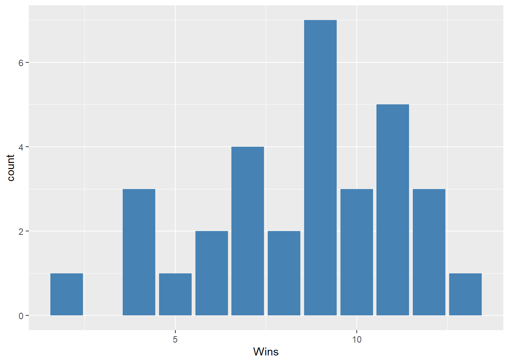
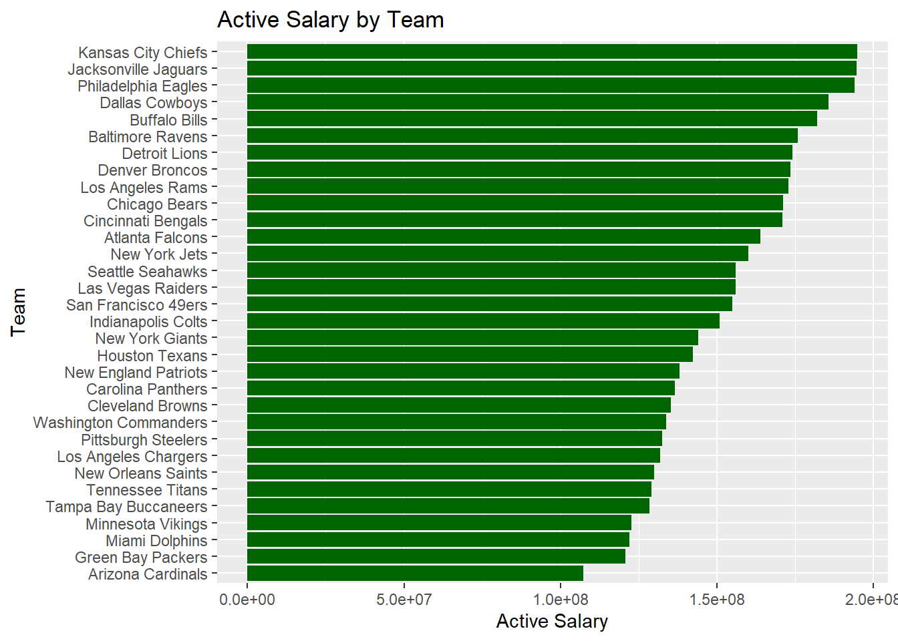
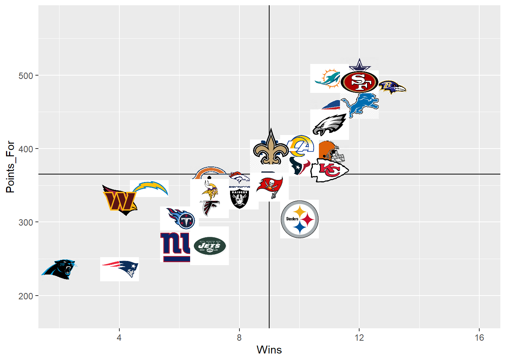
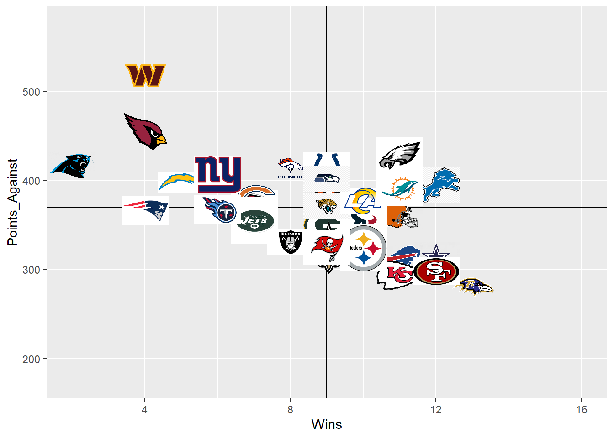
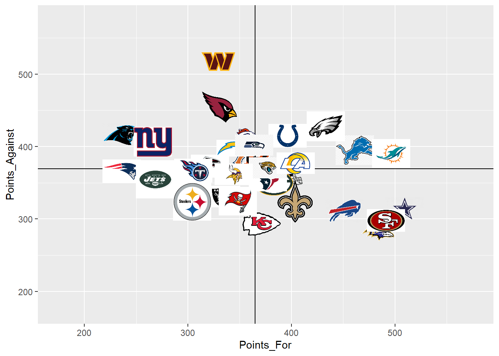
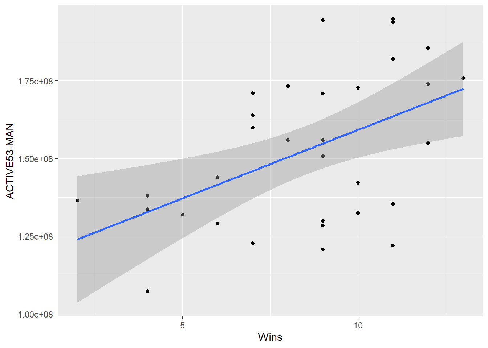

#load needed packages. make sure they are installed.
library(here) #for data loading/saving
library(dplyr)
library(skimr)
library(ggimage)
library(ggplot2)
library(readr)
library(readxl)Exploratory Data Analysis
This Quarto file loads the cleaned data and does some exploring.
As part of the exploratory analysis, you should produce plots or tables or other summary quantities for the most interesting/important quantities in your data. Depending on the total number of variables in your dataset, explore all or some of the others. Figures produced here might be histograms or density plots, correlation plots, etc. Tables might summarize your data.
Start by exploring one variable at a time. Then continue by creating plots or tables of the outcome(s) of interest and the predictor/exposure/input variables you are most interested in. If your dataset is small, you can do that for all variables.
Plots produced here can be scatterplots, boxplots, violinplots, etc. Tables can be simple 2x2 tables or larger ones.
Setup
Load the data.
#Path to data. Note the use of the here() package and not absolute paths
data_location <- here::here("data","raw-data","NFL_data.xlsx")
#load data
nfl <- read_excel(data_location)
nfl# A tibble: 32 × 12
Team Wins Losses Win_Percentage Points_For Points_Against PLAYERSACTIVE
<chr> <dbl> <dbl> <dbl> <dbl> <dbl> <dbl>
1 Arizona … 4 13 0.235 330 455 53
2 Atlanta … 7 10 0.529 321 373 54
3 Baltimor… 13 4 0.765 483 280 53
4 Buffalo … 11 6 0.647 451 311 53
5 Carolina… 2 15 0.118 236 416 53
6 Chicago … 7 10 0.412 360 379 52
7 Cincinna… 9 8 0.529 366 384 53
8 Clevelan… 11 6 0.647 396 362 53
9 Dallas C… 12 5 0.706 509 315 53
10 Denver B… 8 9 0.471 357 413 53
# ℹ 22 more rows
# ℹ 5 more variables: `AVG AGETEAM` <dbl>, TOTAL_CAPALLOCATIONS <dbl>,
# `CAP SPACEALL` <dbl>, `ACTIVE53-MAN` <dbl>, DEADCAP <dbl>Data exploration through tables
Showing a bit of code to produce and save a summary table.
summary_df = skimr::skim(nfl)
print(summary_df)── Data Summary ────────────────────────
Values
Name nfl
Number of rows 32
Number of columns 12
_______________________
Column type frequency:
character 1
numeric 11
________________________
Group variables None
── Variable type: character ────────────────────────────────────────────────────
skim_variable n_missing complete_rate min max empty n_unique whitespace
1 Team 0 1 13 21 0 32 0
── Variable type: numeric ──────────────────────────────────────────────────────
skim_variable n_missing complete_rate mean sd
1 Wins 0 1 8.5 2.75
2 Losses 0 1 8.5 2.75
3 Win_Percentage 0 1 0.504 0.161
4 Points_For 0 1 370. 71.9
5 Points_Against 0 1 370. 49.9
6 PLAYERSACTIVE 0 1 53.0 0.474
7 AVG AGETEAM 0 1 26.4 0.514
8 TOTAL_CAPALLOCATIONS 0 1 221657893. 6308982.
9 CAP SPACEALL 0 1 7792023. 7868094.
10 ACTIVE53-MAN 0 1 152636106. 24505676.
11 DEADCAP 0 1 38620348. 21185078.
p0 p25 p50 p75 p100 hist
1 2 7 9 11 13 ▃▂▅▇▇
2 4 6 8 10 15 ▇▇▅▂▃
3 0.118 0.412 0.529 0.647 0.765 ▃▂▃▇▆
4 236 330. 365 402. 509 ▂▅▇▂▃
5 280 330 369 399 518 ▆▇▇▂▁
6 52 53 53 53 54 ▁▁▇▁▁
7 25 26.1 26.4 26.9 27.2 ▁▂▇▅▆
8 199530464 218238469. 222323832 223898891. 232771942 ▁▁▅▇▃
9 -801620 3396322. 6655017 9060576. 37989804 ▇▇▁▁▁
10 107314612 132378112. 152874542. 172955681. 194829168 ▃▇▃▆▃
11 4451550 22839174. 33304760. 56801662. 81574757 ▃▇▂▃▂# save to file
summarytable_file = here("results", "tables", "summarytable.rds")
saveRDS(summary_df, file = summarytable_file)We are saving the results to the results folder. Depending on how many tables/figures you have, it might make sense to have separate folders for each. And/or you could have separate folders for exploratory tables/figures and for final tables/figures. Just choose a setup that makes sense for your project and works for you, and provide enough documentation that someone can understand what you are doing.
Data exploration through figures
Histogram plots for the continuous outcomes.
Wins first.
p1 <- nfl %>%
ggplot(aes(x=Wins)) +
geom_bar(fill="steel blue")
plot(p1)
figure_file = here("results", "figures","Wins-distribution.png")
ggsave(filename = figure_file, plot=p1) Saving 7 x 5 in imageNow Active Salary
p2 <- nfl %>%
ggplot(aes(x=reorder(Team, `ACTIVE53-MAN`), y = `ACTIVE53-MAN`)) +
geom_bar(stat = "identity", fill="darkgreen") +
coord_flip() +
labs(title = "Active Salary by Team", x = "Team", y = "Active Salary")
plot(p2)
figure_file = here("results", "figures","weight-distribution.png")
ggsave(filename = figure_file, plot=p2) Saving 7 x 5 in imagecreate median variables
median_points_for <- median(nfl$Points_For)
median_points_for[1] 365median_points_against <- median(nfl$Points_Against)
median_points_against[1] 369median_wins <- median(nfl$Wins)
median_wins[1] 9create images
nfl$image_file <- paste0("team_images/", nfl$Team, ".png")
summary(nfl$image_file) Length Class Mode
32 character character points_for_wins <- nfl %>%
ggplot(aes(Wins,Points_For))+
geom_point()+
xlim(2,16)+
ylim(175,575)+
geom_hline(yintercept=365)+
geom_vline(xintercept=9) +
geom_image(aes(image = image_file), size = 0.03, asp = 4.0)
points_for_wins
points_against_wins <- nfl %>%
ggplot(aes(Wins,Points_Against))+
geom_point()+
xlim(2,16)+
ylim(175,575)+
geom_hline(yintercept = 369)+
geom_vline(xintercept = 9)+
geom_image(aes(image=image_file), size = 0.03, asp = 4.0)
points_against_wins
points_for_against <- nfl %>%
ggplot(aes(Points_For, Points_Against))+
geom_point()+
xlim(175,575)+
ylim(175,575)+
geom_hline(yintercept=369)+
geom_vline(xintercept=365)+
geom_image(aes(image = image_file), size = 0.03, asp = 4.0)
points_for_against
Plot wins as a function of salary
p3 <- nfl %>%
ggplot(aes(x=`Wins`, y=`ACTIVE53-MAN`)) + geom_point() + geom_smooth(method='lm')
plot(p3)`geom_smooth()` using formula = 'y ~ x'
figure_file = here("results", "figures", "Wins-Salary.png")
ggsave(filename = figure_file, plot=p3) Saving 7 x 5 in image
`geom_smooth()` using formula = 'y ~ x'For your own explorations, tables and figures can be “quick and dirty”. As long as you can see what’s going on, there is no need to polish them. That’s in contrast to figures you’ll produce for your final products (paper, report, presentation, website, etc.). Those should look as nice, polished and easy to understand as possible.